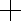

Use the Joint tool to draw joints as you create your .
The Joint tool is located on the It can also be accessed from the Tools menu.
When the Joint tool is selected, the mouse pointer appears as a cross-hair .